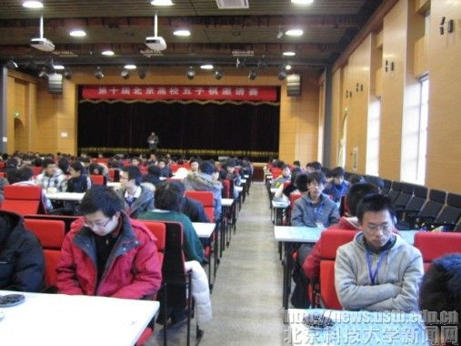
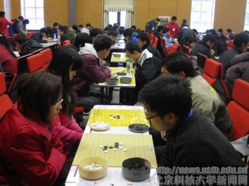

第十届北京高校赛成绩
#1 第十届北京高校赛成绩 作者：虎哥 发表时间：2010-12-2 12:09:53
感动注：部分资料转自中国五子棋网
11月27日，第十届北京高校五子棋邀请赛在北京科技大学教工活动中心礼堂内盛大开赛。这次大赛由北京市学生联合会主办，共青团北京科技大学委员会及北科大奕海方圆棋牌协会承办，参赛方来自北京二十七个高校。国家体育总局棋牌运动管理中心为这次比赛的业务支持单位。

27日早晨，在进行了赛场检查、赛前例会、记者签到等工作之后，8点钟，佩戴着比赛证的棋手们便开始签到入场，赛场被分为有禁和无禁两个赛区。8点30分，北京高校五子棋联合会领导致开幕词，之后棋手代表宣读棋手宣誓书，9点钟，总裁判长宣布此次比赛正式开始。

赛场上，来自各大高校的棋手们全神贯注地投入到了比赛当中，赛场内只有裁判的身影在移动着，场外的观众们也很自觉地保持着安静，整个礼堂沉浸在一种紧张的气氛之中。选手们有的眉头深锁，有的若有所思，有的已经露出了胜利的笑容,让在旁观战的人们不禁跟着他们的表情揪起心来。比赛中，无禁和有禁两组均采用积分编排制，比赛次为9轮。比赛采用共用时间结合包干制的方式，双方共用时间为40分钟。
在比赛场地四周站着的是本次大赛的工作人员，他们的任务是保证现场安全有序。现场还设有防火安全组、医疗救治组等，以保证比赛能顺利安全地进行。
比赛共进行了两天。28日下午四点，棋盘上的格斗宣告结束，举行了闭幕式。闭幕式上市学联领导、中国棋院领导、承办学校团委副书记等陆续发表讲话。接着到了最引人注目的环节——总裁判长宣布本次大赛的获奖名单并由领导们为获奖选手颁奖。摘得有禁组团体冠军桂冠的是北京交通大学二队，王硕同学荣获个人赛冠军。无禁组团体冠军得主为北京交通大学一队，莫溢同学夺得个人赛冠军。
赛后，各参赛队伍共同合影留念，并热烈地交流、讨论。28日晚上6点，伴随着选手们欢快的笑声，第十届北京高校五子棋邀请赛正式结束。
五子棋是一种两人对弈的纯策略型棋类游戏，是起源于中国古代的传统黑白棋种之一。发展于日本，流行于欧美。容易上手，老少皆宜，而且趣味横生，引人入胜；不仅能增强思维能力，提高智力，而且富含哲理，有助于修身养性。欢迎各位同学们踊跃接触五子棋，在此类比赛中锻炼自己，展现风采。
有禁组个人成绩及名次
名次 姓名 协会 国际.. 地方.. 积分 对手分 累进分 中间分
1 王硕, 交大 8.5 55.0 43.5 43.0
2 黄金贤, 人大 8 55.5 40.0 43.0
3-6 仇云飞, 人大 7 51.5 38.5 41.5
蔡新雨, 首师 7 51.5 38.0 39.0
孙宇航, 联合 7 47.0 34.0 36.5
任纪远, 首师 7 44.5 31.0 35.5
7-8 曾杨锋, 北科 6.5 59.0 38.5 45.5
张珵, 北航 6.5 47.5 36.0 37.5
9-22 徐建鑫, 交大 6 55.0 34.0 42.5
刘先达, &nb
#2 Re:第十届北京高校赛成绩 作者：被感动的人 发表时间：2010-12-2 12:28:44
原来混混跟云飞是一个学校滴~#3 Re:第十届北京高校赛成绩 作者：梧桐风 发表时间：2010-12-2 12:41:59
无禁是一手交换的哈~#4 Re:第十届北京高校赛成绩 作者：浩瀚铭剑 发表时间：2010-12-2 17:43:34
色虎牛逼#5 Re:第十届北京高校赛成绩 作者：小帮帮 发表时间：2010-12-2 21:00:03
交大一直很牛啊，没想到我的母校竟然沦落到无人组织和参加比赛，凄惨啊#6 Re:第十届北京高校赛成绩 作者：掌棋宣传员 发表时间：2010-12-3 0:30:49
不愧是掌棋的同盟,交大果然牛X~#7 Re:第十届北京高校赛成绩 作者：虎哥 发表时间：2010-12-3 12:12:29
劳资毕业生采集信息，弃权了一轮，悲剧#8 Re:第十届北京高校赛成绩 作者：儒释道 发表时间：2010-12-4 9:56:38
一手交换组137人，
连珠组91人
［此帖子已被 儒释道 在 2010-12-4 9:57:42 编辑过］
#9 Re:第十届北京高校赛成绩 作者：路痴 发表时间：2010-12-6 15:46:57
赞同志们！！！！！！！！#10 Re:第十届北京高校赛成绩 作者：斜月 发表时间：2010-12-24 16:04:14
交大威武！勇登新高！